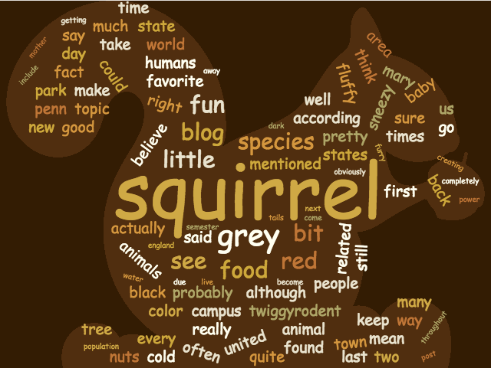

Most of my other visualizations are about rather serious topics, so I wanted to make one more light-hearted visualization. The topic: squirrels! They are super cute and make excellent food for red-tail hawks (my parents are falconers). I found a silly non-scientific squirrel blog by Erika Veiszlemlein at Penn State, copied the text from the blog posts into a .txt file, tokenized it, cleaned out stop words and punctuation, and computed the frequencies of the words. I printed out the results in a form that would be easy to copy into the word cloud generator.
I typically don't think that word clouds are the most informative visualizations; this is no exception. However, I have had some curiosity about the strengths and weaknesses of different wordcloud generators, and I had not used https://www.wordclouds.com/ before. I liked having the ability to upload a .png file and have the wordcloud form to its shape. I also liked the speed, the color scheme options, and the font options, and found it relatively self-explanatory. The major downside was that it was extremely particular about the combination of weights, spacing, and size of the word cloud, and often would leave out words if it thought some of the weights were too large, rather than scaling in some appropriate fashion.
Unsurprisingly, the most frequent words in the blog about squirrels were "squirrel" and "squirrels" (I only left the singular form in the word cloud). My favorite term that was included in the wordcloud: "twiggyrodent".
The clean data for this visualization is available here. The original blog by Erika Veiszlemlein is here. The code for producing the weights for the word cloud is on my Github site.